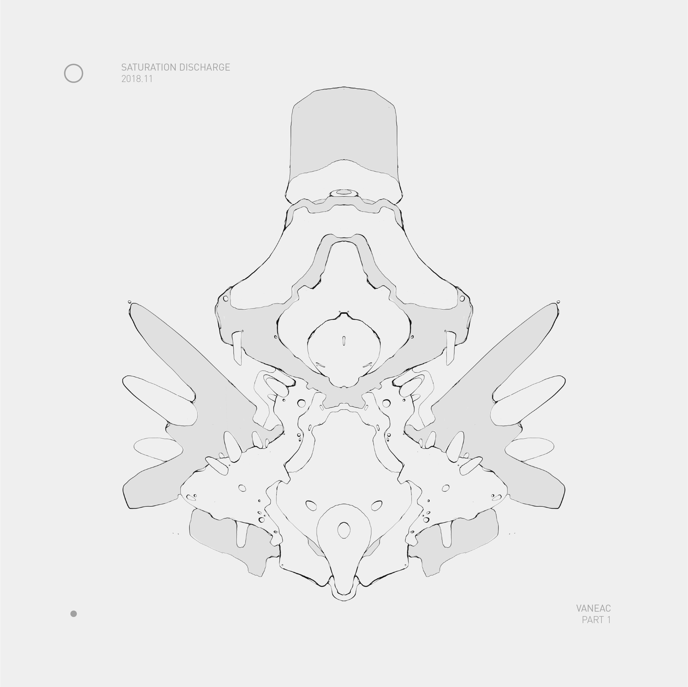

index/output/audio/osa/saturation discharge
Saturation Discharge is the first Vaneac release to reside in the 2nd verse of Vaneakeu. It documents the journey Decell takes from the mountainous sector of Desult to the colorless artificial sector of Areuvel. You can download Saturation Discharge here.
2018.11 saturation discharge tracklisting
1. infrared confluence 03:12
2. seriel temperatures of silent gods 03:38
3. from desult to areuvel 04:10
4. priest in parasol 03:36
2018.11 saturation discharge cover (portrait 2018 07 30)

2018.11 saturation discharge cover

about | contact | source